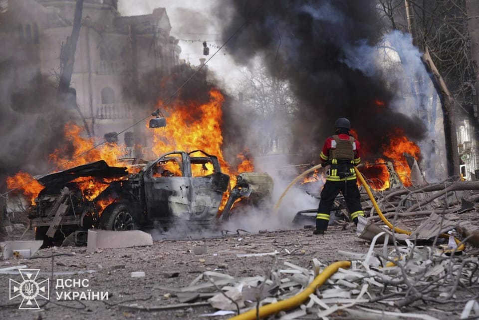

世界苦茶04月14日新闻 | 42条 | 俄罗斯空袭苏梅导致二十余人死亡

俄罗斯空袭苏梅导致二十余人死亡 | 大阪世博会开幕 | 三月社融数据和M1转向增长 | 香港民主党启动解散程序
苦茶数据
美元兑人民币：7.31（昨日7.28，前日7.28）
美元兑日元：142.90（昨日143.59，前日143.69）
上证指数：3267（昨日3238，前日3243）
标普500指数：休市（昨日5368，前日5268）
比特币：85290（昨日84744，前日83564）
布伦特原油：64.44（昨日64.76，前日63.86）
中国新闻
• 香港民主党解散进程启动 ：早前宣布将展开解散程序的香港最大民主派政党民主党，星期天授权中央委员会跟进解散事宜，但暂时没有明确解散时间表。综合香港《星岛日报》和东网报道，香港民主党星期天召开特别会员大会，讨论是否授权中央委员会进一步跟进民主党解散事宜。民主党主席罗健熙说，特别大会有超过100名委员出席，并以绝大多数比数通过授权中委会跟进解散事宜。
• 大阪世博中国馆开馆 ：日本大阪世博会中国馆举行开馆仪式，首次在全球零距离对比展示由中国嫦娥五号、嫦娥六号探测器采集的月球正面和背面土壤样品。据中新社报道，开馆仪式星期天在大阪举行。中国馆以“共同构建人与自然生命共同体——绿色发展的未来社会”为主题，以“天人合一”“绿水青山”“生生不息”为叙事脉络，首次在全球零距离对比展示由中国嫦娥五号、嫦娥六号探测器采集的月球正面和背面土壤样品。
• 玉渊谭天强调，绝不出卖利益 ：中国央视旗下新媒体“玉渊谭天”发文强调，其他国家不管是反制美国还是和美国谈判，中国没有任何意见，但如果谁拿着中国利益去给美国当投名状，中国绝不答应。“玉渊谭天”星期天在微信公众号发文称：“中方的态度很明确，其他国家不管是反制美国还是和美国谈判，都是各国的主权事务，中方没有任何意见。但如果谁拿着中国的利益去给美国当投名状，中国绝不答应！”“玉渊谭天”认为，“对于美方的霸凌行径，需要更多国家站出来，予以反制。”
• 重庆雷暴哮喘患者激增 ：中国重庆星期五凌晨出现数千次雷电，多家医院在这段期间接诊多名雷暴哮喘患者，有医院短短四小时接诊了310名患者。综合中国上游新闻和中央广播电台总台旗下的“国家应急广播”微信公众号报道，4月11日凌晨开始，重庆多地迎来雷雨。截至11日早上6时，重庆当天雷电活动次数超过6000次。当地多家医院急诊科在11日凌晨开始接诊的雷暴哮喘患者均有上百位。
• 英议员被拒港引担忧 ：英国外交部长拉米星期天说，他对一名英国议员被拒绝入境香港深感担忧，并表示将紧急向中国当局提出此事。法新社报道，韦拉·霍布豪斯是自由民主党的议员，也是“对华政策跨国议会联盟”的成员，这个组织负责审查北京的人权记录。《星期天泰晤士报》称，65岁的霍布豪斯星期四与丈夫一同飞往香港，探望自2019年以来一直居住在香港的儿子和刚出生的孙子。
• 马媒播中方节目迎习近平 ：配合中国国家主席习近平下周到马来西亚展开国事访问，马国媒体平台将播出由中国中央广播电视总台制作的电视节目。《东方日报》报道，从星期天起，马新社电视、TV AlHijrah、Coolita智能电视平台及八度空间将陆续播放CMG精品节目，包括《习近平的文化情缘》、《航拍中国：新疆篇》、《摆脱贫困》、《中国中医药大会》、《澎湃中国》以及《Z世代青年说》。中共中央宣传部副部长兼中央广播电视总台台长慎海雄在文告说，此次节目展播是CMG与马来西亚媒体联合推动的一项重要文化交流举措，旨在巩固两国友谊。
• 中越北部湾联合巡逻将启动 ：中国和越南将从星期三起开展为期两天的北部湾联合巡逻。中国国防部星期天在官网公布，根据中越两军相关协议和安排，4月16日至17日，中越两国海军舰艇编队将在北部湾海域开展第38次联合巡逻，进一步增进两军务实合作，提升共同维护相关海域安全能力。中越双方也举行中越边境国防友好交流活动。中国国防部介绍，这个活动会在广西和越南谅山省相关地区和口岸举行。
• 习近平称，进一步深化中印尼全面战略合作，加强多边战略协调 ：中国国家主席习近平周日同印度尼西亚总统互致贺电时称，高度重视中印尼关系发展，进一步深化两国全面战略合作，加强多边战略协调，不断丰富中印尼命运共同体的时代内涵。习近平称，“中国和印尼是隔海相望的好邻居、命运与共的好伙伴。”
• 巴西总统将再访中国 ：巴西政府表示，巴西总统卢拉将于下月前往中国，与习近平主席举行自2023年就任以来的第三次会晤，而第四次会晤已计划于7月举行。
亚太印太新闻
• 越南破假奶粉案 ：越南警方破获一起大规模生产和销售573个品牌的假奶粉案件，这些奶粉主要针对糖尿病患者、肾病患者、早产儿和孕妇等弱势群体。越南通讯社报道，当地警方星期六宣布对涉案八人提起诉讼，包括两名越南网红。他们涉嫌生产和销售假冒食品，以及违反会计规定。据警方称，该犯罪团伙在河内及周边省份分销大量假奶粉。
• 达信称缅军愿意和谈 ：泰国前首相达信说，缅甸军政府和反政府武装同意进行和平谈判的可能性很高。据《曼谷邮报》报道，达信星期天告诉记者，他早前与缅甸军政府领导人敏昂莱会面时谈到这一想法，敏昂莱作出积极反应。达信向敏昂莱表达了希望看到缅甸恢复和平的愿望，并强调和谈是实现这一目标的第一步。达信是亚细安轮值主席国马来西亚首相安华的顾问之一，为安华处理亚细安事务提供咨询。
• 台考虑便利店战时用途 ：针对台湾据报有意将便利商店转型成“战时枢纽”，台湾总统府表示会纳入参考，但现阶段尚无规划。英国《卫报》星期六报道，台湾总统赖清德设立的“全社会防卫韧性委员会”正评估在战时阶段启动多项全民防卫应变方案，其中一项是将全台约1万3000家便利商店转型为“战时枢纽”，为民众供应粮食和医疗物资，同时作为政府的信息传递与通信备援平台。台湾《联合报》报道，民进党立法院党团干事长吴思瑶认为，上述建议是可行的，但还需要进一步拟定计划，如加强布建电力供应等必要防灾功能，让便利商店能在关键时刻发挥功能。
• 台助理涉谍案将被开除 ：台湾国安会秘书长吴钊燮的前助理何仁杰涉嫌成为中国大陆间谍，执政民进党中评会承诺迅速开除何仁杰的党籍，绝不宽待。据台湾《联合报》报道，何仁杰是吴钊燮之前担任外交部长时的助理。何仁杰被绿营党工吸收成为大陆间谍，提供机敏外交资料给中国大陆。台湾国安站本月10日搜索约谈何仁杰到案，台北地检署讯后依违反《国安法》、且有串灭证之虞向法院声押禁见获准。
• 日舰将停靠柬埔寨新基地 ：日本海上自卫队舰船将停靠位于柬埔寨西南部的云壤海军基地，该基地在中国援助下完成扩建。据日本共同社报道，记者星期六从日本与柬埔寨两国政府相关人士处获悉，海自舰船最快将于4月19日停靠该基地。柬埔寨和中国本月5日在云壤基地联合举行了竣工仪式。日本海自舰船将成为竣工后首次靠港的中柬两国以外的外国舰船。
• 泰泼水节交通事故频发 ：泰国泼水节期间交通事故频发，过去两天已造成至少57人死亡。《曼谷邮报》报道，道路安全运营中心星期天报告称，星期六共发生248起交通事故，使节日期间事故总数达到459起。星期六的交通事故造成30人死亡，比星期五多三人；受伤人数为257人，比前一天的201人有所增加。这两天是人们返乡或度假的日子。
• 卓荣泰称台须防洗产地 ：台湾行政院长卓荣泰强调，美国很在意洗产地问题，台湾不能成为破口，台湾政府未来也会大力启动反倾销调查。综合台湾《自由时报》和中央广播电台报道，卓荣泰星期天在高雄主持产业座谈会，在致词时说除了对等关税、非关税贸易壁垒之外，美国很在意洗产地问题，台湾不能成为破口，所以台湾政府会携手产业界，同心协力防范洗产地问题。他说：“MIT就是MIT，台湾一定要严守这么防线，不能成为破口。”
• 首尔市长吴世勳不参选总统 ：据韩联社周六报导，首尔市长吴世勳将不会竞选韩国总统。吴世勳一直被认为是韩国保守党的潜在候选人。韩国将于6月3日举行总统选举。
科技新闻
• GitHub 疑似屏蔽所有中国 IP 地址访问： 4月13日，微软旗下的代码托管平台 GitHub 目前因未知原因已屏蔽所有中国IP地址，对于当前已经处于登录状态的用户来说仍然可以访问，如果尚未登录则在访问时提示 IP对该站点的访问已被限制。从状态码可以看到返回的是 HTTP 403 也就是禁止访问，测试显示只要归属地为中国大陆的 IP地址都是被禁止访问的，数据库来源可能是 GeoIP 地址库，因此部分非中国 IP地址例如新加坡IP可能因为数据库显示问题也遭到屏蔽。 （翻評：這個之後GitHub更改了配置似乎已經解決了這個問題。）
• 索马里批准埃隆·马斯克的星链在该国运营： 当地时间13日，索马里国家通信管理局向埃隆·马斯克旗下星链颁发了许可证，允许其在该国开展服务。根据该管理局官网声明，政府官员和星链代表出席了在首都摩加迪沙举行的仪式。星链市场准入高级总监瑞安·古德奈特与市场准入经理米凯拉·帕夫拉克代表公司参会。他们向与会者表示，卫星服务将很快在全国范围内推出。
财经新闻
• 美国商务部长表示电子产品关税豁免只是暂时的 将采用单独无豁免关税： 美国商务部长霍华德·卢特尼克周日表示，政府周五晚间决定免除本月早些时候实施的一系列电子设备关税，这只是暂时的缓刑。卢特尼克宣布，这些产品将面临“半导体关税”，可能在“一两个月内”生效。卢特尼克称，“所有这些产品都将归入半导体产品类别，美国将采取一种特殊的重点关税，以确保这些产品能够回流。我们需要半导体、芯片、平板显示器——我们需要在美国制造这些东西。我们不能依赖东南亚来满足我们所有运营需求。”他继续说道：“所以，总统的做法是，他说这些产品不受互惠关税的约束，但它们包含在半导体关税中，而半导体关税大概会在一两个月后出台。所以这些很快就会出台。”
• 中企推迟拉美建厂计划 ：受到中美贸易战升级冲击，中国据报已推迟批准比亚迪等国内车企在拉丁美洲设厂的计划。中国电动车巨头比亚迪2023年宣布将在墨西哥设厂，并在去年一度表示要在年内公布工厂选址；另一家中国车企吉利汽车则于今年2月宣布与法国雷诺达成协议，授权使用雷诺在巴西的工厂，并收购雷诺巴西业务的少数股份。路透社星期五引述知情人士报道，北京政府审批上述两个项目的时间比预期还来得长。中国国家发改委在与比亚迪与吉利汽车代表会面时，已表示相关计划存在技术转移的风险，但他们没有进一步说明。
• 中方回应美关税豁免 ：针对美国豁免智能手机等部分产品的对等关税，中国商务部称，这是美国修正错误做法的一小步，并呼吁美国在纠错方面迈出一大步，彻底取消对等关税。美国总统特朗普于美东时间星期六宣布豁免计算机、智能手机、半导体制造设备、集成电路等部分产品的对等关税。对此，中国商务部星期天在官网以发言人形式回应说，这是继美国4月10日暂缓对部分贸易伙伴征收高额对等关税以来，对相关政策做出的第二次调整。“应该说，这是美方修正单边对等关税错误做法的一小步。”
• 英国救援中企旗下钢铁厂 ：英国国会星期六通过了紧急法案，以拯救隶属中企敬业集团的英国钢铁公司。综合路透社和彭博社报道，英国钢铁公司在斯肯索普地区的工厂雇用 3500名员工。由于英国政府和公司未能达成关于转向更环保钢铁生产方式的融资协议，工厂的未来成为关注点。英国国会两院是在复活节休会期临时复会后，批准这项法案，授权商务部长雷诺兹指挥英国钢铁公司的员工和运营，并订购原材料以确保在斯肯索普地区的生产活动能持续进行。
• 美联储称必要时干预市场 ：美国波士顿联储主席柯林斯说，特朗普的关税措施引发华尔街动荡，美联储“完全”准备好，在必要时进行干预，以安抚紧张的金融市场。柯林斯今年是美联储关键利率制定委员会的12位投票成员之一。在《金融时报》周五刊登的专访中，她说，美联储“完全准备好”部署各种工具，在情况需要时进场协助稳定金融市场。她强调，美联储是否干预，将取决于“我们观察到的具体市场状况”。柯林斯当天较早前接受雅虎财经访问时也说：“关税越高，对经济增长的潜在拖累以及通胀上升的可能性就越大。”她预期通胀率今年会高于3%，但经济不会“显著”下滑。
• 中官员战时状态应对关税战 ：知情人士称，中国政府官员已进入“战时状态”，应对美国贸易战。外交部和商务部官员被要求取消假期，保持手机全天候开机。负责美国的部门也得到了加强。中国还通过传递信函等方式，加强与同样受到美国关税影响国家的接触，包括日本、韩国以及美国在欧洲的盟友。中国在信中概述了中国的立场、对美国政策的批评、多极化以及各国团结的必要性。一位欧盟外交官表示，中国已与部分二十国集团国家政府接触，提出了一份联合声明，表达对多边贸易体系的支持。但中国传递的信息未解决其他国家对中国产能过剩、补贴制度以及不公平竞争的担忧。本届特朗普政府与中国政府缺少高层沟通渠道。中国外长王毅2月曾试图与美国国务卿鲁比奥以及白宫国家安全事务助理迈克尔·华尔兹会面，但均未成功。白宫认为，中国应该派高级贸易官员而非王毅进行对话。特朗普一直希望与习近平直接谈判。美国多次询问中国外交官，习近平是否会要求与特朗普通电话，但得到的是否定答案。专家分析指，此类模式不适合中国的决策体系，中国通常习惯在工作层面达成协议并开展工作后再安排峰会。
• 美拟储备深海金属应对冲突 ：知情人士称，美国政府正起草行政命令，允许积存深海金属，以应对在电池矿物和稀土供应链中占主导地位的中国所采取的管制措施。路透社引述英国《金融时报》星期六的报道称，根据这项计划，此举将在美国境内形成大量可使用的深海金属，以备未来与中国发生冲突，以及中国可能限制金属和稀土进口时使用。中国本月较早前反击美国征收对等关税，对七类中重稀土实施出口管制。
• 特朗普称来自中国的芯片将面临国家安全调查，预计将加征关税 ：美国总统特朗普周日强调了其政府的最新信息，即把智能手机、电脑和其他电子产品排除在对中国的对等关税之外将是短暂的，并承诺将对半导体行业进行国家安全贸易调查。美国周五刚宣布对这些产品进口给予关税豁免。美国商务部长卢特尼克表示，来自中国的关键技术产品将在未来两个月内与半导体一起被另外征收新的关税。特朗普将在一两个月内对电子产品征收一项“特别重点型关税”，同时还将对半导体和药品征收行业关税。在卢特尼克发表讲话之前，中国商务部就美国豁免部分产品对等关税表示，这是美国修正单边对等关税错误做法的一小步，并敦促美国在纠错方面“迈出一大步”，彻底取消“对等关税”的错误做法。
• 中国3月金融数据报喜，政策仍伺机而动 ：中国央行罕见地在周末发布3月金融数据，新增贷款和社融增量均明显超出预期，狭义货币供应量M1增速有所加快以及居民中长贷同比多增，均显示融资需求在缓慢修复中。不过当下关税战进展一波三折，经济面临的不确定性依旧较大，托底政策仍将伺“机”而动。央行公布一季度人民币贷款增加9.78万亿元；路透据此计算，3月人民币贷款增加3.64万亿元，高于路透3万亿元的调查中值；当月末广义货币供应量同比增长7%，路透调查中值为7.1%。
• 美国4月消费者信心降至近三年来最低，通胀预期飙至1981年以来最高 ：美国消费者信心在4月急剧恶化，一年通胀预期飙升至1981年以来最高，人们对贸易紧张局势升级感到不安，这扰乱了金融市场并增加了经济衰退的风险。密西根大学消费者调查显示，消费者信心指数降至50.8，为2022年6月以来最低，预估为54.5。一年通胀预期升至6.7%，为连续四个月上升0.5个百分点或更多。五年通胀预期升至4.4%的1991年6月以来最高。另有数据显示，3月最终需求生产者物价指数(PPI)环比下降0.4%，为2023年10月以来首降，预估为上涨0.2%。3月PPI同比涨幅降至2.7%。数据公布后，利率期货市场认为美联储6月降息的概率降至约75%，并认为今年还将总共降息三次，对第四次降息的押注有所减少。
• 日自民党促日圆升值 ：日本自民党政调会长小野寺五典周日表示，由于日圆疲软推高了日本家庭的生活成本，日本必须让日圆升值，例如通过帮助提高该国的工业竞争力来让日圆升值。小野寺五典还表示，日本不应该为了报复美国总统特朗普征收的关税而故意抛售所持美国公债。
• 印美贸易协议有望达成 ：一名印度贸易官员表示，印度和美国已经敲定了双边贸易协议第一部分的磋商范围，并称有可能在未来90天内达成“双赢”协议。
• 中西签农产品贸易协议 ：中国与西班牙签署了两项农产品贸易协议，涉及猪肉和樱桃。西班牙肉类工业全国协会表示：“在当前因关税危机引发的全球贸易动荡背景下，我们对亚洲巨头这一新举措充满乐观与期待，它为猪肉产品供应开辟了新的选择。"
俄乌战争
• 俄袭乌苏梅市致伤亡 ：俄罗斯对乌克兰苏梅市发动袭击，造成至少32人死亡和83人受伤。乌克兰总统泽连斯基呼吁盟友对俄罗斯施加“强大压力”，迫使俄罗斯结束对乌克兰的战争。法新社报道，泽连斯基星期天在社交媒体发文，呼吁欧洲和美国做出“强烈回应”。“如果没有真正强大的压力，没有对乌克兰的适当支持，俄罗斯将继续拖延这场战争。普京无视美国提出的全面无条件停火建议已经两个月了。”他也说：“不幸的是，莫斯科方面自信地认为他们有能力继续杀戮。我们需要采取行动来改变这种局面。”
• 特朗普要求在乌克兰问题上拿出行动，克宫回应称不可能立即取得成果 ：克里姆林宫周日表示，与美国总统特朗普团队的接触进展非常顺利，但鉴于特朗普的前任拜登对两国关系造成的破坏程度，现在期望立即取得成果还为时过早。克里姆林宫发言人佩斯科夫说，双方正在多个层面进行接触，包括通过外交部、情报机构和普京的投资特使德米特理耶夫。在特朗普的中东问题特使威特科夫与俄罗斯总统普京举行会谈后，特朗普在周六表示，旨在结束这场战争的讨论可能进展顺利，但“总有一个时候需要当事方要么拿出行动，要么停止空谈”。
• 美乌矿产谈判气氛紧张 ：一位知情人士称，美国和乌克兰官员周五就美国提出的获取乌克兰矿产资源的提议举行会谈，知情人士补充说，鉴于会谈的“对立”气氛，取得突破的可能性渺茫。该消息人士说，华盛顿会谈的紧张局势起因于特朗普政府最新提出的草案，该草案内容比最初的版本更加宽泛。
其他新闻
• 哈马斯发布美以人质视频 ：哈马斯星期六发布一段据称是以色列裔美国籍人质埃丹·亚历山大的视频。路透社报道，亚历山大自2023年10月7日被哈马斯俘虏以来，一直被关押在加沙。在这段视频中，他声称自己已被关押551天，质问为何至今仍被关押，并恳求获得释放。亚历山大是一名在以色列军队服役的士兵。
• 真主党南部据点移交军队 ：一名接近真主党的消息人士星期六说，真主党在黎巴嫩南部的大部分军事据点已被置于黎巴嫩国家军队的控制之下。法新社报道，真主党与以色列去年11月27日达成停火协议。协议规定，只有联合国维和部队和黎巴嫩军队能部署在该国南部。协议还要求真主党拆除其在南部剩余的军事基础设施，并将战斗人员迁移到利塔尼河以北。
• 澳工党启动大选竞选 ：澳大利亚总理阿尔巴尼斯领导的工党星期天启动5月3日大选的竞选活动。他承诺，将帮助更多潜在购房者。路透社报道，工党政府已承诺到2030年建成120万套住房，以缓解因经济适用房短缺而引发的住房成本压力。阿尔巴尼斯在珀斯的竞选活动启动仪式上说：“在澳洲，拥有住房不应该成为一种幸运儿才能继承的特权。”
• 意总理将访美巩固关系 ：意大利总理梅洛尼将接连会见美国总统特朗普，以及美国副总统万斯，以巩固跨大西洋关系。法新社报道，意大利总理办公室星期天说，梅洛尼将于4月18日在罗马接见万斯，而此前一天她将到华盛顿会见美国总统特朗普。万斯也将在耶稣受难日访问梵蒂冈，而复活节是意大利最神圣的节日。
• 匈牙利集会嘲讽总理禁游行 ：数千名匈牙利民众星期六在首都布达佩斯游行，嘲讽总理欧尔班，他禁止LGBTQ+群体参加一年一度的同志游行。路透社报道，这场集会由“双尾狗党”发起。该党带有浓重的讽刺意味表示，他们发起此次集会是为了支持欧尔班消除多样性的努力，因为这比匈牙利所有其他问题都更重要，包括高通胀、缺乏经济适用房和糟糕的公共服务。
• 苏丹难民营遇袭逾百死 ：苏丹北达尔富尔州卫生部长哈提尔4月12日说，靠近该州首府法希尔市的扎姆扎姆难民营和阿布舒克难民应急中心11日和12日分别遭到苏丹快速支援部队袭击，造成至少114名平民死亡。快速支援部队尚未就上述袭击事件作出回应。
• 特朗普家族在加密货币领域全力投入，收益近10亿美元： 唐纳德·特朗普总统及其家人几乎对加密货币行业的每一个角落都表现出浓厚兴趣。据彭博社统计，各类项目的账面收益总计接近10亿美元。早在2021年，特朗普就曾将比特币称为“骗局”，并表示他不喜欢这种代币，“因为它是一种与美元竞争的货币”，应当受到“非常非常严格的监管”。然而在此之后，特朗普与数字资产行业的关系发生了显著转变。作为总统候选人，他积极争取加密货币高管和支持者为其连任竞选提供大量资金，并从中获得可观回报。在其第二任期内，他签署了多项行政命令，兑现了让美国成为“全球加密货币之都”的承诺。